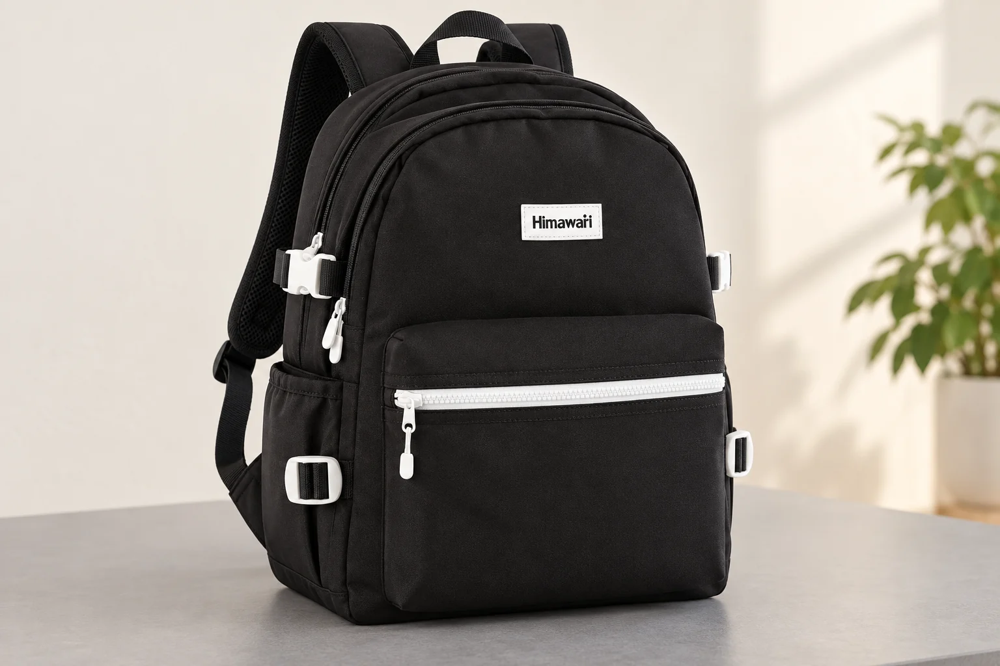
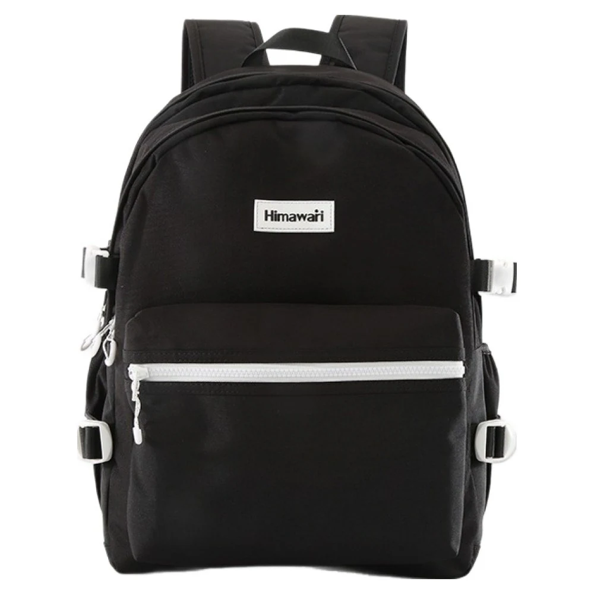
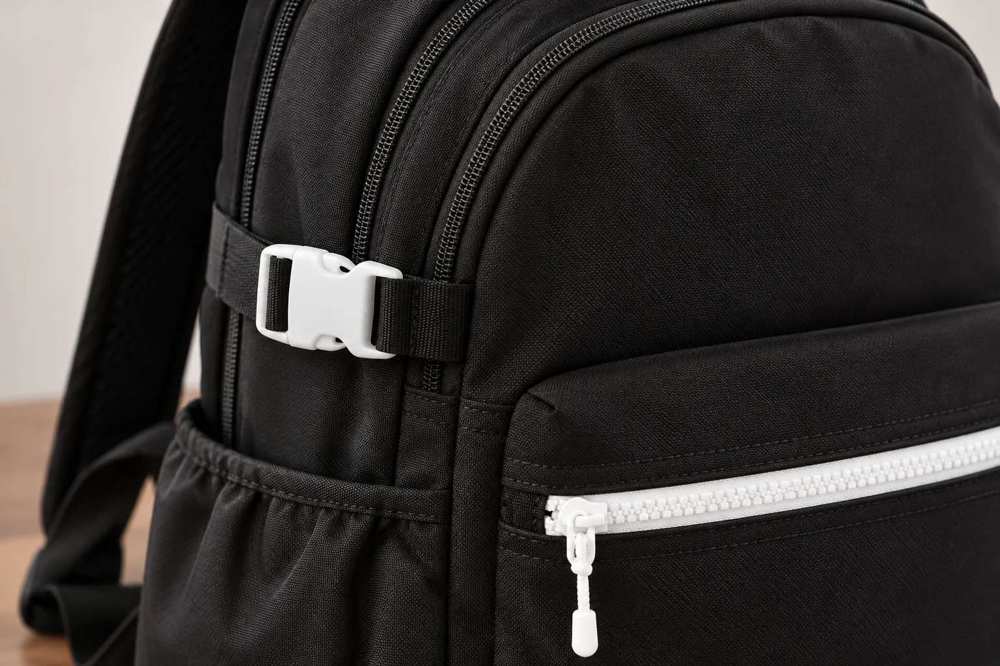

백팩 옆 버클, 가방을 열 때도 잠가 둘까

백팩의 윗지퍼를 열다가 옆 끈 부근에서 손을 멈추게 되는 경우가 있습니다. 옆면에 가로 벨트가 있는 가방이라면 지퍼만 보아서는 열리는 범위를 이해하기 어렵습니다. 벨트를 그대로 둔 상태에서 어느 입구까지 쓸 수 있는지, 넓게 펼칠 때에는 어떤 부품이 먼저 움직여야 하는지 함께 보아야 합니다. 버클을 항상 잠그거나 항상 푸는 한 가지 방식으로 정할 문제는 아닙니다.
여기서 보는 No.9290 블랙의 실제 정면 사진에는 위쪽의 흰색 버클과 검은 가로 끈, 더 아래의 흰색 사각 조절 부품이 보입니다. 둥근 윗선을 따라 이어지는 지퍼 선과 앞쪽의 흰색 가로 지퍼도 구분됩니다. 제품 상세 자료는 옆 부품을 사이드 버클로 소개합니다. 사진에서 확인한 위치를 기준으로, 입구를 조금 열 때와 넓게 열 때의 차이를 살펴봅니다.
위쪽 버클과 아래쪽 조절 부품은 다릅니다
두 부품은 모두 흰색이어서 작은 사진에서는 같은 장치처럼 보일 수 있습니다. 그러나 위쪽에는 서로 맞물리는 버클 형태가 보이고, 아래쪽에는 끈이 지나가는 사각 틀이 보입니다. 옆면을 열고 싶다고 아래 사각 부품부터 분해할 필요는 없습니다. 지금 풀려는 것이 버클의 결합인지, 끈의 길이를 바꾸는 조절인지 구별해야 원래 상태로 돌아가기도 쉽습니다.
가방을 처음 살펴볼 때에는 내용물을 비우고 안정된 곳에 둡니다. 윗부분의 버클과 옆 포켓, 지퍼 선의 위치를 함께 보면 부품끼리 겹치는 곳을 찾을 수 있습니다. 흰색 부품만 확대한 사진은 형태를 보여주지만 어느 높이에 있는지 설명하기 어렵습니다. 전체 모습과 가까운 모습을 번갈아 보며 같은 부위를 확인하는 편이 좋습니다. 이때 끈을 완전히 빼내거나 길이를 크게 바꾸는 동작까지 한꺼번에 할 이유는 없습니다.

지퍼를 조금 여는 동작에서는
위쪽을 조금 열어 손을 넣는 장면과 가방 양옆까지 벌리는 장면은 필요한 범위가 다릅니다. 실제 지퍼가 움직이는 길에 벨트가 닿지 않고 원단도 당겨지지 않는다면 버클을 풀지 않고 쓸 수 있는 구간이 있을 수 있습니다. 그 범위는 제품의 실제 구조에서 확인해야 합니다. 모든 옆 버클이 주 지퍼를 잠그는 장치라고 생각하거나, 모든 입구가 버클과 무관하게 열린다고 생각하지 않습니다.
평소에 쓰는 입구가 여러 개라면 먼저 어떤 지퍼를 여는지 봅니다. No.9290 정면의 흰색 가로 지퍼와 윗부분의 검은 곡선 지퍼는 위치가 다릅니다. 앞 포켓만 여는데 옆 버클까지 매번 풀면 필요 없는 동작이 늘 수 있습니다. 반대로 본체를 넓게 열 계획인데 앞 포켓을 열 때와 같은 순서를 고집하면 어느 부분이 걸리는지 놓치기 쉽습니다. 다음에 쓸 입구가 기준입니다.
옆면까지 넓게 벌리고 싶다면
지퍼를 더 움직이기 전에 가로 끈이 입구 양쪽을 이어 잡고 있는지 살펴봅니다. 끈이 가로지르는 부위를 억지로 늘려 통과시키기보다 가방을 받친 상태에서 위쪽 버클을 푸는 순서를 검토할 수 있습니다. 원래 안내된 해제 방식으로 결합을 풀고, 분리된 끈을 지퍼 길 밖으로 치운 다음 원하는 범위까지 열어봅니다. 지퍼가 뻑뻑하다는 느낌만으로 원인을 지퍼 자체의 문제로 정하지 않는 이유입니다.
버클을 푼 뒤에도 입구가 더 열리지 않으면 그 상태에서 멈춥니다. 안쪽 물건이 밀고 있는지, 다른 끈이나 원단이 걸렸는지 보는 일이 남습니다. 해제한 버클 하나가 가방 전체의 개방 범위를 보장하는 것은 아닙니다. 주머니나 내부 칸의 구조를 확인하지 않은 채 더 펼치려고 힘을 줄 필요도 없습니다. 입구를 넓게 열어야 하는 작업이라면 받칠 면과 손이 움직일 자리까지 마련한 뒤 다루는 편이 낫습니다.

상세 사진의 흰색 버클은 위치와 형태를 설명하는 자료입니다. 이 부품이 지퍼를 잠그는 보안 장치라거나, 특정 무게의 물건을 고정하는 장치라는 시험 결과는 확인하지 않았습니다. 옆 끈을 잠갔다는 사실과 가방의 지퍼를 닫았다는 사실은 따로 확인합니다. 버클이 있으니 주 지퍼를 조금 열어 두어도 된다는 식으로 사용 범위를 넓히지 않습니다.
열 때와 닫을 때의 순서는 거꾸로만 외우지 않기
물건을 넣은 뒤에는 입구 주변에 벨트 끝이나 버클이 들어가지 않았는지 먼저 봅니다. 지퍼가 원래 경로에서 정상적으로 닫힌 다음, 필요한 버클을 다시 연결합니다. 닫는 과정에서 본체 모양이 달라졌다면 버클의 두 반쪽이 자연스럽게 만나는지도 살펴야 합니다. 서로 닿지 않는 상태를 끈을 세게 당겨 해결하면 어느 조건이 달라졌는지 놓치게 됩니다.
한쪽 버클을 연결했다면 반대쪽도 현재 상태를 확인합니다. 대칭으로 보이는 부품이 있어도 한쪽을 잠근 동작이 다른 쪽까지 대신하지는 않습니다. 양쪽 끈을 같은 길이로 보이게 만드는 것보다, 지퍼와 옆 포켓 주변에서 꼬이거나 끼인 곳이 없는지를 살핍니다. 끈 길이를 바꾸었다면 바꾸기 전 상태를 기억할 사진을 남길 수 있습니다. 매번 모든 조절부를 움직이지 않아도 필요한 결합을 다룰 수 있습니다.
| 열려는 곳 | 먼저 살필 부분 |
|---|---|
| 앞 가로 지퍼 | 그 지퍼의 손잡이와 이동 경로 |
| 윗입구 일부 | 가로 끈과 겹치지 않는 실제 개방 범위 |
| 양옆까지 넓은 입구 | 버클 결합과 벨트를 치울 자리 |
구매 전에는 버클의 수보다 개폐 장면을 보기
지퍼와 버클이 함께 보이는 측면 사진이나 실제 개폐 안내가 있다면 같은 동작으로 연결해 보세요. 외관 사진만 있다면 어느 입구를 어느 정도 열고 싶은지 구체적으로 질문할 수 있습니다. 버클이 많으니 정리가 잘된다는 추상적인 평가보다, 내가 자주 쓸 입구를 여는 데 몇 번의 결합 해제가 필요한지가 선택에 더 직접적인 정보입니다. 자주 열지 않는 큰 칸과 자주 여는 작은 칸의 비중에 따라서도 선호가 달라질 수 있습니다.
No.9290의 확인된 외부 크기는 가로 30 × 세로 42 × 폭 18cm입니다. 이 수치로 버클을 푼 뒤 늘어나는 내부 용량을 계산하지는 않습니다. 사이드 벨트가 있다는 이유만으로 용량 확장 기능을 가정할 수도 없습니다. 옆 버클을 읽는 목적은 더 많은 짐을 담는 방법을 만드는 데 있지 않습니다. 지퍼와 끈이 서로 다른 부품이라는 점을 알고, 실제로 여는 범위에 맞춰 손의 순서를 고르는 데 있습니다.